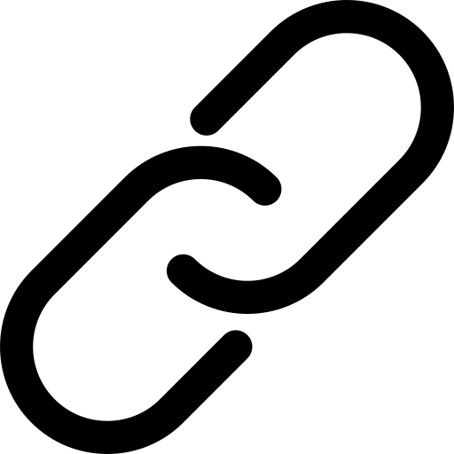

A Força de Aceleração (Speed Force, em inglês) é um campo de energia extradimensional e uma força cósmica que alimenta os poderes de velocidade em personagens como o Flash e outros velocistas em histórias de ficção científica, como nos quadrinhos e séries da DC Comics. Essa força não apenas concede a capacidade de se mover em velocidades super-humanas, mas também oferece outras habilidades relacionadas ao movimento, tempo e percepção.
O que é a Força de Aceleração?
Características principais:
A Força de Aceleração é uma força fundamental do universo, uma representação da realidade em movimento e do fluxo do tempo.

Concede aos velocistas a capacidade de se mover em velocidades sobre-humanas, reagir instantaneamente, manipular o tempo e o espaço, além de aumentar sua força, resistência e metabolismo.
A Força de Aceleração conecta todos os velocistas, permitindo que eles se comuniquem e sintam a presença uns dos outros.
Em algumas versões, a Força de Aceleração demonstra possuir sua própria personalidade, interagindo com os velocistas e, por vezes, se manifestando como pessoas conhecidas.
Existe uma contraparte sombria chamada Força de Aceleração Negativa, que é usada por vilões para obter poderes semelhantes aos dos velocistas, mas com consequências destrutivas.
Em resumo: A Força de Aceleração é um conceito ficcional que representa a energia e o poder por trás da velocidade, sendo essencial para as histórias de velocistas e suas aventuras.